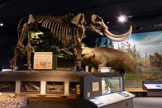

Rochester
Rochester is a city on Lake Ontario, in New York State. Old industrial buildings cluster near the Genesee River's High Falls. The cities main attractions include, Strong National Museum of Play, The George Eastman Museum, Rochester Museum and Science Center, and Nick Tahoe, home of the famous garbage plates.
|
|
| A vast collection of toys and dolls forms the core of the Strong National Museum of Play |
The George Eastman Museum has photography exhibits, film archives and gardens. |
|  |
 |
| Rochester Museum and Science Center has hands-on displays and a planetarium. |
Home of the famous garbage plates |